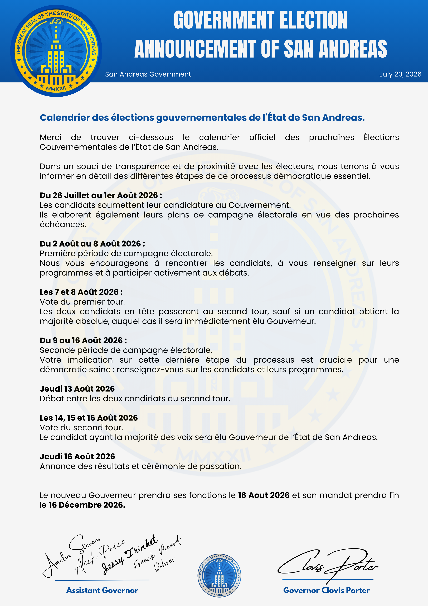
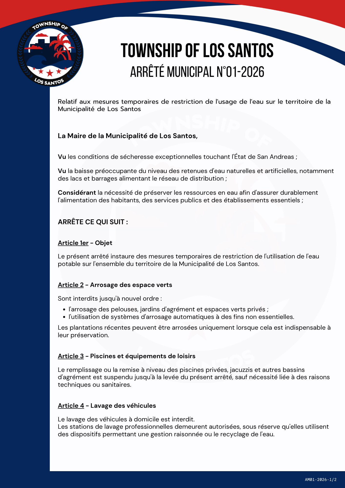
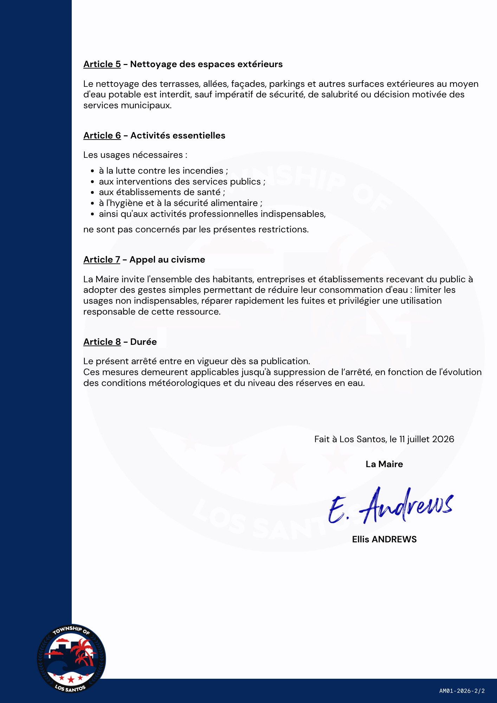
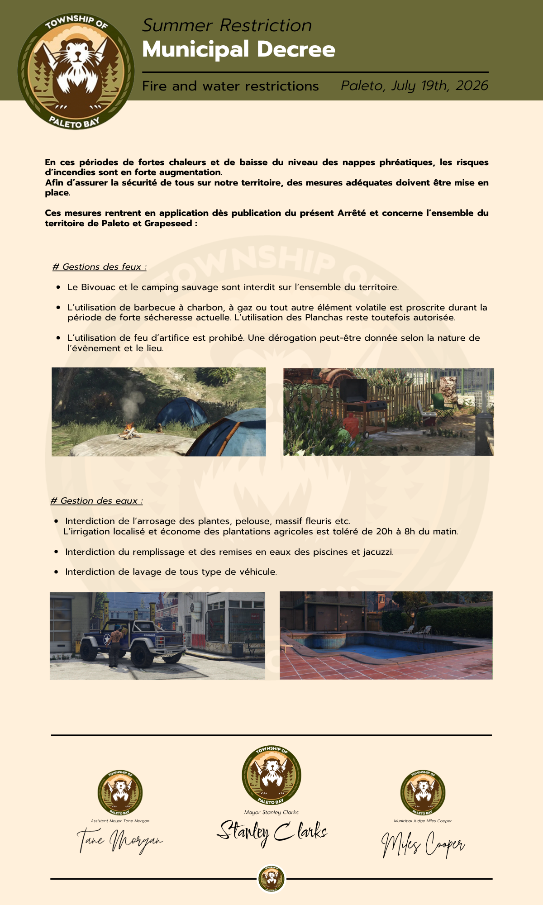

🏛️ Gouvernement
Calendrier des Elections Gouvernementales
Publication du calendrier officiel des elections gouvernementales de l'Etat de San Andreas.
Publication de juillet 2026

Site officiel de la Justice de l'Etat de San Andreas.

Publication du calendrier officiel des elections gouvernementales de l'Etat de San Andreas.
Publication de juillet 2026

Publication de la composition actualisée du Gouvernement de l'Etat de San Andreas.
Publication de juillet 2026
Publication municipale relative aux mesures temporaires de restriction de l'usage de l'eau.
Publication de juillet 2026

Deuxième page de l'arrêté municipal relatif aux mesures temporaires de restriction de l'usage de l'eau.
Publication de juillet 2026

Communication municipale relative aux restrictions d'usage de l'eau et aux feux en zone de Paleto.
Publication de juillet 2026
